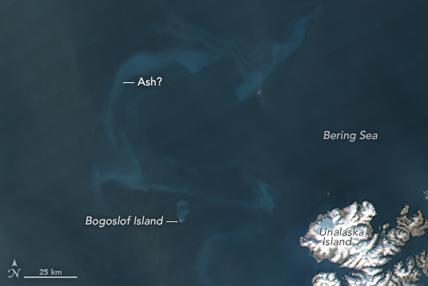

Something Swirling in the Sea
January 20th, 2017 by Kathryn Hansen
Almost every volcano is interesting from a scientific perspective, but there are just too many eruptions for us to cover every single one. Instead we tend to focus on eruptions that have the potential to affect people. Or, occasionally our satellites return images that simply look so unique that we find the time to cover them. The plume recently ejected from Alaska’s Bogoslof Volcano was noteworthy for both reasons.
Bogoslof, which has been erupting since mid-December 2016, gave rise to a compelling two-tone plume. Are materials being ejected from a vent that is still under water? (Most of the volcano is below the surface of the sea.) The volcano’s interaction with seawater explains the white steam. But if the vent is not yet above water, then how did such a large, dark plume of ash reach so high in the atmosphere? Scientists at the Alaska Volcano Observatory continue to monitor the remote volcano and perhaps answers will be forthcoming as the eruption evolves.
Also intriguing are the swirls of blue visible in the image above. The Visible Infrared Imaging Radiometer Suite (VIIRS) on the Suomi NPP satellite captured the image on January 7, 2017. My first thought was that the color was caused by a bloom of phytoplankton. The milky blue color looked about right. And iron from eruptions have previously been shown to provide the nutrients needed for blooms to flourish. But when I asked the experts, the general consensus was that while you can’t rule out a bloom, there was another more likely explanation for the swirls.
According to ocean scientist Norman Kuring of NASA’s Goddard Space Flight Center:
“Phytoplankton don’t normally bloom in the Bering Sea during winter because there’s not a lot of sunlight and because winter storms deepen the mixed layer which also keeps the plankton more in the dark. Wave action can resuspend bottom sediments, and that may be happening farther east along the Aleutian chain in the January 7 image where the water is relatively shallow. Bogoslof Island is beyond the shelf break, however, so bottom resuspension is less likely. Ash in the water seems most probable…. I wouldn’t expect the Bering Sea to be nutrient limited in the winter, so I don’t expect an ash-based phytoplankton boost.”
In short, the swirls are probably ash in the water. The phenomenon is not unprecedented. We have previously published images of the occurrence here and here. But as Kuring reminds us, “the only way to know for sure would be to sample the water directly.”

As U.S. Cedes Leadership on Climate, Others Step Up at Davos
By HIROKO TABUCHIJAN. 21, 2017
DAVOS, Switzerland — When the chief executive of Saudi Arabia’s national oil and gas company mapped out a glowing future for fossil fuels at a discussion in Davos this past week, dissent came from an unexpected corner of the room.
“We have to make a big push in renewables investment,” urged Qiao Baoping, chairman of the energy giant China Guodian. “We have commitments under the Paris accord which we cannot fail to fulfill,” he said, referring to the climate deal passed in 2015.
Under the Obama administration, the United States took on a climate leadership role. But President Trump has threatened to quit the Paris climate deal, and within minutes of his taking office on Friday, the White House website removed a discussion of the threat of climate change and replaced it with a commitment to eliminate cornerstone environmental policies.
If the United States is willing to cede its role, however, there are plenty of countries happy to step up.
Over four days of intense politicking and parleying at the World Economic Forum in Davos, the annual gathering in the Swiss Alps where global policy and business leaders debate the world’s challenges, the sizable Chinese delegation seemed to preach climate action every chance it got.
President Xi Jinping of China set the tone by opening the forum on Tuesday, arguing forcefully for follow-through on the 2015 Paris climate deal. His message was clearly relayed through the Chinese ranks:
■ Mr. Qiao boasted that 70 percent of the 100 billion renminbi, or $14.6 billion, that China Guodian paid into new investments last year went to renewables like wind and solar.
■ Yu Xubo, president of the Chinese food and agriculture giant Cofco, stunned environmental groups by announcing that the company would eliminate deforestation from its supply chain. “Continue business as usual,” he warned, “and face big, serious risks.”
■ Nur Bekri, China’s energy minister, was blunt in acknowledging not only climate change but also the human contribution to it — a declaration unlikely to be heard by certain members of Mr. Trump’s administration.
“Today, we are facing climate change, and we know this is caused by our use of energy,” Mr. Bekri declared. “That is why the Chinese government attaches great importance to the development of clean energy.”
Other developing nations, including India, also promoted their environmental records.
Nirmala Sitharaman, the Indian minister of state for commerce and industry, said the country was ready for a bigger global role in mitigating climate change. She pointed to the International Solar Alliance, a coalition of more than 120 countries that seeks $1 trillion in investments to ramp up solar energy generation. The alliance was first proposed by the Indian prime minister, Narendra Modi.
India, Ms. Sitharaman said, is “no longer on the fringe” of climate change policies and technologies.
The lure of a potentially huge market for clean energy and other technologies that would help mitigate climate change was a driving force, analysts said. The International Energy Agency estimates that renewables will remain the fastest-growing source of electricity into 2021, reaching nearly 30 percent of all power generation by then.
They are also motivated by the risks posed by rising seas, extreme weather and other consequences of unmitigated climate change
Even if the world is able to stave off an increase in atmospheric temperatures of 2 degrees Celsius or 3.6 degrees Fahrenheit — a goal agreed to as part of the Paris deal — climate change could wipe out $1.7 trillion worth of global financial assets, according to a peer-reviewed study published last year in the journal Nature. For example, coastal properties could be lost to rising sea levels.
“Countries are competing to succeed in this new space,” said Pete Ogden, a senior fellow at the Center for American Progress who was a climate adviser to former President Barack Obama. “At the same time, Mr. Trump is signaling a kind of fearfulness of America’s capacity to succeed in a clean economy.”
“They see it in their economic self-interest to do so,” Mr. Ogden said, referring to other countries. “And if the United States wants to cede the playing field, they’ll be happy to capture as big of a share as they possibly can.”
Many corporations, even some previously vilified for their environmental footprint, were eager to jump on the bandwagon, promoting climate-friendly business practices. Doug McMillon, the chief executive of Walmart, praised a $3.88 T-shirt made of cotton that he said was traceable to the Mississippi Valley. It was made, he said, with 50 percent renewable energy and reused water.
A group of 62 chief executives at Davos discussed, among other issues, spurring Mr. Trump to take climate action by emphasizing how clean energy investment can create jobs, said Paul Polman, chief executive of Unilever, who participated in the event.
“To make America great again, climate action is very logical,” he said. “This is a very convincing story for job creation and economic growth.”
But there are concerns over this new class of climate-change stewards.
Despite its talk of being a leader in fighting global warming, China, the world’s biggest polluter, has refused to accept international monitoring of its emissions, and conflicting data about the country’s energy use has raised questions about the accuracy of its reporting.
It still depends on coal for three-quarters of its electricity, though its recent announcement that it would cancel plans to build more than 100 coal-fired plants has raised hopes that the country is finally serious about weaning itself off thermal power.
Corporations have repeatedly proved themselves less than perfect guardians of the environment. A study by researchers at George Washington University and the University of Michigan showed that, under a voluntary program to disclose greenhouse gas emissions, companies that emitted more tended to report the opposite.
Rachel Kyte, special representative of Sustainable Energy for All, a United Nations-backed group that promotes clean energy, said there had been a major shift in the attitudes of top companies toward climate-change risks in recent years.
Ms. Kyte, who led the discussion at the Davos meeting of chief executives, said the prospect of more investor or regulatory scrutiny of the risks from climate change that companies face had galvanized action.
“It was a roll-up-your-sleeves kind of session,” she said. “The sense was that we need to keep moving action forward, because we don’t have time.”
Review: In ‘Antarctica: Ice and Sky,’ a Scientist’s Life Work
By: Glenn Kenny
“In my lifetime I have seen how man, by burning oil, wood and coal, has been changing the earth’s climate. I traveled back thousands of years to check whether what I’d discovered wasn’t just a quirk of nature.” These simple, strong words in the film “Antarctica: Ice and Sky” are spoken by the French explorer and scientist Claude Lorius. His work in the Antarctic, beginning over 60 years ago, eventually unearthed compelling evidence that climate change was a man-made phenomenon.
Mr. Lorius, now in his 80s, stands silent amid snow both frozen and melting in new footage captured by the film’s director, Luc Jacquet (“March of the Penguins”). His persona is avuncular yet sometimes also accusatory. The movie, using a great deal of well-assembled archival footage, shows Mr. Lorius as a young man in the 1950s signing up for what he says he believed would be an “adventure” in the Antarctic. Although explorers had made it to the South Pole earlier in the 20th century, Mr. Lorius insists that it wasn’t until the ’50s that any scientist “ever gathered any meteorological or geophysical data” from the bottom of the world. Mr. Lorius becomes a student of snow, a decoder of ice. Ceaselessly pursuing the coldest places on the planet — he fondly reminisces about reaching the Soviet base of Vostok in 1984, exulting about “American logistics for French researchers on a Soviet base in the middle of the Cold War” — he makes a series of unsettling discoveries.
The movie is both heady (there are real thrills in the stories of exploration) and sobering (Mr. Lorius’s findings are convincing). This is a cogent, accessible cinematic delineation of an increasingly crucial problem.